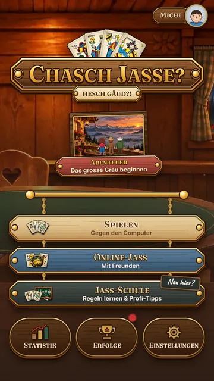
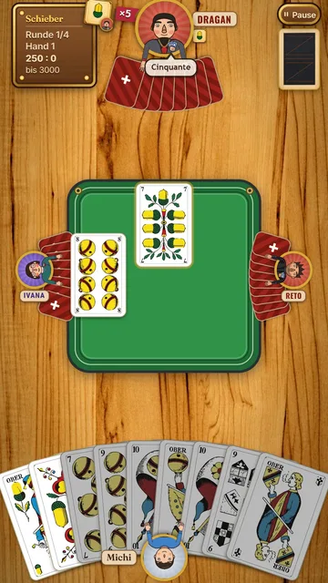
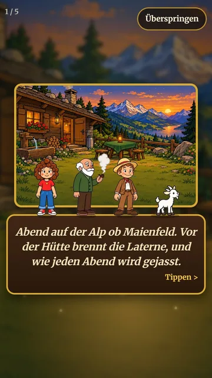
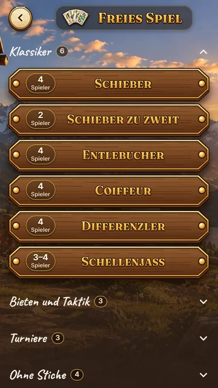

Gratis, ohne Werbung und ohne Konto. Schieber, Coiffeur, Differenzler und vieles mehr. Online mit Freunden oder gegen den Computer (ohne Internetverbindung spielbar).




Android
Drei Tipper, dann bist du dabei.
- Der Testgruppe beitreten Auf der Google-Seite «Gruppe beitreten» tippen – manchmal fragt Google ein zweites Mal, dann nochmals bestätigen. Du bekommst keine Mails. Gruppe beitreten
- Als Tester anmelden Auf der Seite von Google Play «Tester werden» tippen. Tester werden
- App installieren Im Play Store «Installieren» tippen. Erscheint die App noch nicht, ein paar Minuten warten und nochmals versuchen – über die Suche findest du sie noch nicht. App installieren
iPhone und iPad
Zwei Tipper, dann bist du dabei.
- TestFlight laden Testversionen laufen über Apples App «TestFlight». Im App Store «Laden» tippen. Hast du TestFlight schon, geht es mit «Schon erledigt – weiter» direkt zum nächsten Schritt. TestFlight laden
- Am Test teilnehmen In TestFlight «Akzeptieren» und dann «Installieren» tippen. Am Test teilnehmen
Und dann?
- Spiel ab und zu eine Partie – auch eine kurze hilft.
- Bleib dabei und lösche die App während der 14 Tage nicht. Updates kommen automatisch über den Play Store bzw. TestFlight.
- Fehler oder Ideen? Schreib mir an michi.zihlmann@gmx.net oder nutze «Feedback an Entwickler senden» im Play Store bzw. «Feedback senden» in TestFlight.
Klappt etwas nicht?
Android: «Tester werden» zeigt einen Fehler oder die App ist nicht verfügbar.
Meist bist du in Schritt 1 und 2 mit verschiedenen Google-Konten angemeldet. Prüfe oben rechts im Browser bzw. im Play Store, welches Konto aktiv ist, und wiederhole die Schritte mit demselben Konto.
iPhone: Der Link öffnet nur eine Webseite.
Dann fehlt noch TestFlight. Lade die App «TestFlight» aus dem App Store und tippe danach nochmals auf testflight.apple.com/join/d4GzuGqu.
Warum so umständlich?
Damit die App in die Stores darf, braucht es einen Test: Bei Google müssen mindestens 12 Personen 14 Tage lang als Tester angemeldet bleiben, bei Apple laufen Testversionen nur über TestFlight. Die Schritte schreiben Google und Apple vor.
Welche Daten sehe ich als Entwickler?
Bei Android die E-Mail-Adresse deines Google-Kontos (als Mitglied der Testgruppe), bei TestFlight die Angaben, die Apple an Entwickler weitergibt, sowie Rückmeldungen, die du selbst sendest. Mehr dazu in der Datenschutzerklärung.
Weitersagen
Kennst du jemanden, der gern jasst? Link schicken oder diesen Code scannen lassen – er passt für Android und iPhone:
emzetta.github.io/chaschjasse/test.html